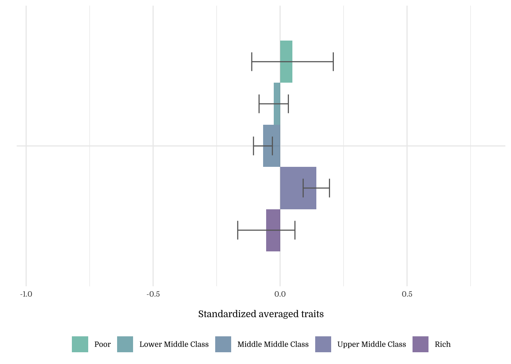
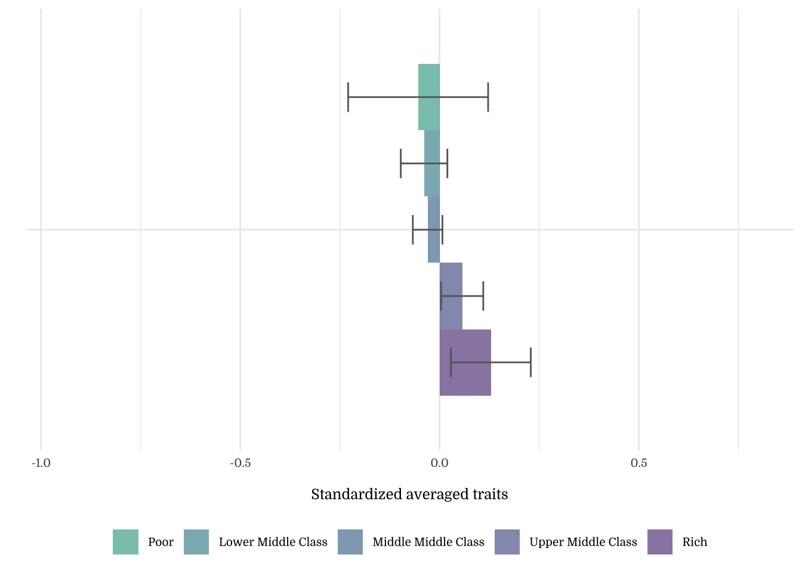
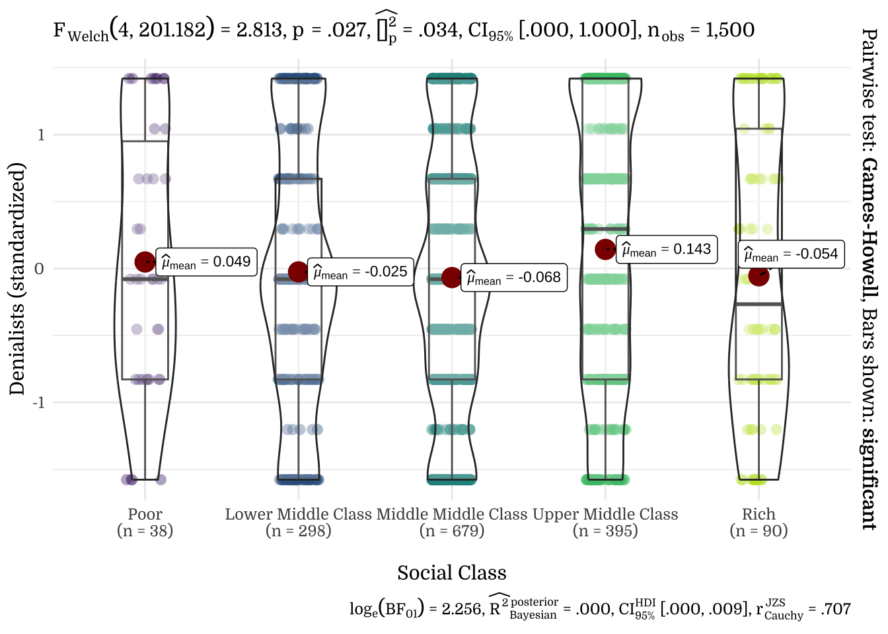
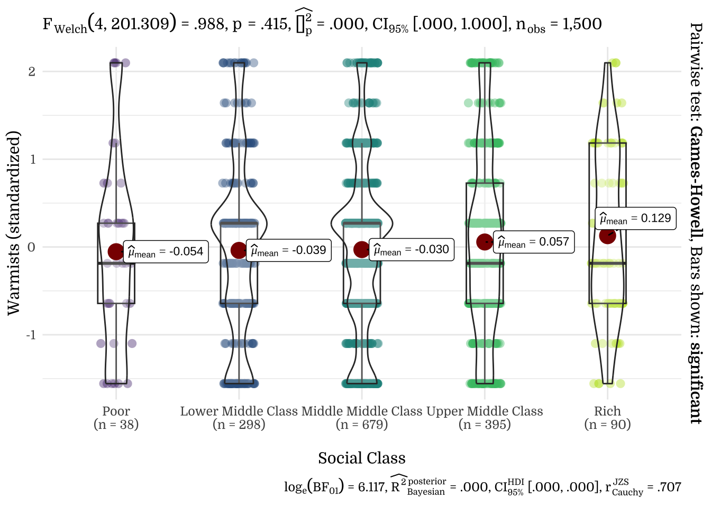

Climate Facts [2016]
A Politico-Psychological Analysis
1 Study Characteristics
1.1 Items: Climate Facts
1.2 Sample
N=1500
To conduct a exploratory and a confirmatory large surveys during the general election, we hired a professional survey firm (SSI, a US-based market research company that recruits participants from a panel of 7,139,027 American citizens; more information can be found at www.surveysampling.com (now https://www.dynata.com/) to recruit a nationally representative sample of 1,500 Americans (50.7% women) who completed study materials during the general election from August 16-September 9, 2016. (Information about sampling and exclusion criteria is included in the Supplement). The age distribution was as follows: 18-24 (12.9%), 25-34 (17.6%), 35-44 (17.5%), 45-54 (19.5%), 55-65 (15.6%) and older than 65 (16.9%). The ethnic breakdown was: White/European American (82.5%), Black/African American (7.7%), Latino (5.9%) and “Other” (4.0%). Concerning religion, 67.6% identified as Christian, 17.1% as religiously affiliated but not Christian, and 15.3% as Atheist/Agnostic. With respect to education 35.1% indicated “high school only or lower,” 31.4 % indicated “some college,” and 33.6% indicated having received a “Bachelor” or “Graduate” degree. 2424 participants were directed to the survey, 1885 of which finished the survey (attrition rate 22%).
We followed recommendations to minimize the problem of careless responding in online studies. Specifically, we employed 10 random attention questions and time controls to check for data quality. There were 385 participants who failed more than one attention check or finished the survey in under ~22 minutes and were therefore excluded from the sample. For the 1500 participants who successfully finished the survey, completion time was 67 minutes on average (MD: 51min).
2 Descriptives
2.1 Means, SD, Range, & SE
| mean | sd | se | |
|---|---|---|---|
| Denialists_mean | 5.21 | 2.67 | 0.07 |
| Warmists_mean | 4.41 | 2.19 | 0.06 |
| Climate_Facts | 4.81 | 1.76 | 0.05 |
| Note: | |||
| n = 1500, median = 5, min = 1, max = 9 |
| mean | sd | se | |
|---|---|---|---|
| Denialists1 | 5.21 | 2.67 | 0.07 |
| Warmists1 | 4.41 | 2.19 | 0.06 |
| Climate_Facts | 4.81 | 1.76 | 0.05 |
| Denialists_mean | 5.21 | 2.67 | 0.07 |
| Warmists_mean | 4.41 | 2.19 | 0.06 |
| Note: | |||
| All items: n = 1500, median = 5, min = 1, max = 9. Climate_Facts: median = 5, min = 1, max = 9. Denialists_mean: median = 5, min = 1, max = 9. Warmists_mean: median = 5, min = 1, max = 9 |
2.2 Response Distribution
{kind=link}
{kind=link}
{kind=link}
{kind=link}
2.3 Correlations
2.3.1 Correlation Plots
{kind=link}
{kind=link}
{kind=link}
Note. Upper triangle shows Spearman’s rank-order correlations. *** p < .001, ** p < .01, * p < .05.
2.3.2 PIDF
{kind=link}
{kind=link}
{kind=link}
Note. Upper triangle shows Spearman’s rank-order correlations by party identity. *** p < .001, ** p < .01, * p < .05.
2.3.3 Correlation Matrix
{kind=link}
{kind=link}
{kind=link}
3 Demographics
3.2 Gender
{kind=link}
{kind=link}
{kind=link}
{kind=link}
| Gender | N | Mean | SD |
|---|---|---|---|
| Female | 760 | 0.14 | 0.94 |
| Male | 740 | -0.15 | 1.03 |
| Gender | N | Mean | SD |
|---|---|---|---|
| Female | 760 | -0.02 | 0.95 |
| Male | 740 | 0.02 | 1.05 |
3.3 Age
{kind=link}
{kind=link}
{kind=link}
{kind=link}
| Age | N | Mean | SD |
|---|---|---|---|
| 18-24 years | 193 | -0.03 | 0.93 |
| 25-34 years | 264 | 0.23 | 0.92 |
| 35-44 years | 263 | 0.03 | 1.02 |
| 45-54 years | 292 | 0.01 | 0.99 |
| 55-64 years | 234 | 0.12 | 1.01 |
| 65+ | 254 | -0.37 | 1.02 |
| Age | N | Mean | SD |
|---|---|---|---|
| 18-24 years | 193 | -0.18 | 0.89 |
| 25-34 years | 264 | -0.05 | 0.98 |
| 35-44 years | 263 | 0.06 | 1.06 |
| 45-54 years | 292 | -0.04 | 0.99 |
| 55-64 years | 234 | 0.04 | 1.02 |
| 65+ | 254 | 0.13 | 1.02 |
3.4 Education
{kind=link}
{kind=link}
{kind=link}
{kind=link}
| Education | N | Mean | SD |
|---|---|---|---|
| Less than High School | 51 | -0.09 | 1.03 |
| High School | 475 | -0.13 | 0.94 |
| Some College | 471 | 0.01 | 1.01 |
| Bachelor | 310 | 0.13 | 1.00 |
| Graduate | 193 | 0.11 | 1.07 |
| Education | N | Mean | SD |
|---|---|---|---|
| Less than High School | 51 | 0.03 | 1.08 |
| High School | 475 | -0.08 | 0.97 |
| Some College | 471 | -0.04 | 1.01 |
| Bachelor | 310 | 0.13 | 1.01 |
| Graduate | 193 | 0.08 | 1.00 |
3.5 Income Levels
{kind=link}
{kind=link}
{kind=link}
{kind=link}
| Income Levels | N | Mean | SD |
|---|---|---|---|
| Less than $15,000 | 178 | -0.05 | 1.00 |
| $15,000-$24,999 | 180 | -0.03 | 1.00 |
| $25,000-$34,999 | 176 | 0.00 | 1.01 |
| $35,000-$49,999 | 227 | 0.14 | 0.94 |
| $50,000-$74,999 | 292 | -0.03 | 1.01 |
| $75,000-$99,999 | 192 | 0.02 | 0.99 |
| $100,000-$149,999 | 160 | 0.02 | 1.06 |
| $150,000 + | 95 | -0.17 | 1.00 |
| Income Levels | N | Mean | SD |
|---|---|---|---|
| Less than $15,000 | 178 | -0.05 | 1.04 |
| $15,000-$24,999 | 180 | 0.03 | 1.01 |
| $25,000-$34,999 | 176 | -0.13 | 0.99 |
| $35,000-$49,999 | 227 | 0.00 | 0.96 |
| $50,000-$74,999 | 292 | 0.02 | 0.96 |
| $75,000-$99,999 | 192 | -0.01 | 1.00 |
| $100,000-$149,999 | 160 | 0.04 | 1.05 |
| $150,000 + | 95 | 0.16 | 1.05 |
3.6 Ethnicity
{kind=link}
{kind=link}
Note on the Okabe-Ito color palette. The Okabe-Ito color palette (seen above) is a set of colorblind-friendly categorical colors available in R. We are using this palette for graphs with non-ordered variables (e.g., groups, categories) for accessibility.
{kind=link}
{kind=link}
| Ethnicity | N | Mean | SD |
|---|---|---|---|
| Caucasian/European origin | 1237 | -0.02 | 1.01 |
| Black/African American | 115 | 0.06 | 0.93 |
| Latino | 88 | 0.14 | 0.95 |
| Asian/Pacific Islander | 29 | 0.37 | 0.82 |
| Native American | 13 | -0.25 | 0.91 |
| Other | 18 | 0.05 | 0.91 |
| Ethnicity | N | Mean | SD |
|---|---|---|---|
| Caucasian/European origin | 1237 | 0.02 | 1.00 |
| Black/African American | 115 | -0.12 | 1.05 |
| Latino | 88 | -0.06 | 0.97 |
| Asian/Pacific Islander | 29 | -0.17 | 0.92 |
| Native American | 13 | -0.47 | 0.85 |
| Other | 18 | 0.02 | 0.82 |
3.7 Occupation
{kind=link}
{kind=link}
{kind=link}
{kind=link}
| Occupation | N | Mean | SD |
|---|---|---|---|
| Employed | 768 | 0.05 | 1.01 |
| Retired | 268 | -0.23 | 1.01 |
| Unemployed | 146 | 0.12 | 0.98 |
| Parent | 104 | -0.05 | 0.95 |
| Disabled | 98 | -0.01 | 1.01 |
| Student | 85 | 0.08 | 0.91 |
| Full-time caregiver | 31 | 0.14 | 0.92 |
| Occupation | N | Mean | SD |
|---|---|---|---|
| Employed | 768 | -0.02 | 1.01 |
| Retired | 268 | 0.07 | 0.98 |
| Unemployed | 146 | -0.03 | 1.02 |
| Parent | 104 | 0.10 | 1.01 |
| Disabled | 98 | 0.03 | 1.06 |
| Student | 85 | -0.15 | 0.90 |
| Full-time caregiver | 31 | -0.04 | 0.88 |
3.8 Area
{kind=link}
{kind=link}
{kind=link}
{kind=link}
| Area | N | Mean | SD |
|---|---|---|---|
| Urban | 955 | 0.09 | 1.00 |
| Rural | 545 | -0.16 | 0.98 |
| Area | N | Mean | SD |
|---|---|---|---|
| Urban | 955 | -0.03 | 1.01 |
| Rural | 545 | 0.05 | 0.99 |
3.9 Religious Affiliation
{kind=link}
{kind=link}
{kind=link}
{kind=link}
| Religious Affiliation | N | Mean | SD |
|---|---|---|---|
| Christian | 1014 | -0.17 | 0.97 |
| Muslim | 9 | 0.05 | 0.97 |
| Jewish | 52 | 0.36 | 0.97 |
| Atheist/Agnostic | 230 | 0.59 | 0.96 |
| Not listed, No religion | 195 | 0.10 | 0.93 |
| Religious Affiliation | N | Mean | SD |
|---|---|---|---|
| Christian | 1014 | 0.06 | 0.98 |
| Muslim | 9 | -0.03 | 1.05 |
| Jewish | 52 | 0.25 | 1.12 |
| Atheist/Agnostic | 230 | -0.27 | 1.03 |
| Not listed, No religion | 195 | -0.05 | 0.99 |
3.10 Section Summary
| Climate Facts | |||
|---|---|---|---|
| Predictors | Estimates | CI | p |
| (Intercept) | 4.88 | 4.50 – 5.25 | <.001 |
| Age | -0.04 | -0.10 – 0.01 | .131 |
| Income | -0.03 | -0.08 – 0.02 | .272 |
| Education | 0.24 | 0.15 – 0.33 | <.001 |
| Gender (Male) | -0.36 | -0.54 – -0.18 | <.001 |
| Observations | 1500 | ||
| R2 / R2 adjusted | .028 / .025 | ||
4 Political Behavior
4.1 Political Orientation
Correlation with General Conservatism, Economic Conservatism, Social Conservatism
{kind=link}
{kind=link}
{kind=link}
{kind=link}
{kind=link}
{kind=link}
4.2 Partisanship
{kind=link}
{kind=link}
| Party Identity | N | Mean | SD |
|---|---|---|---|
| Strong Democrat | 351 | 6.93 | 2.50 |
| Democrat | 223 | 5.96 | 2.38 |
| Leaning Democrat | 124 | 6.55 | 2.12 |
| Independent | 84 | 5.37 | 2.40 |
| Leaning Republican | 111 | 4.05 | 2.47 |
| Republican | 255 | 4.26 | 2.22 |
| Strong Republican | 318 | 3.44 | 2.10 |
| Party Identity | N | Mean | SD |
|---|---|---|---|
| Strong Democrat | 351 | 3.85 | 2.43 |
| Democrat | 223 | 4.24 | 2.18 |
| Leaning Democrat | 124 | 4.15 | 1.92 |
| Independent | 84 | 4.67 | 2.05 |
| Leaning Republican | 111 | 4.63 | 2.15 |
| Republican | 255 | 4.67 | 1.92 |
| Strong Republican | 318 | 4.82 | 2.14 |
4.3 Religiosity
{kind=link}
{kind=link}
{kind=link}
{kind=link}
Note. The y-axis shows residuals after regressing the outcome on demographics (Age, Income, Education, Gender). This illustrates how much the focal construct explains beyond demographic factors.
{kind=link}
{kind=link}
4.4 Candidate Preferences
{kind=link}
{kind=link}
| Candidate Preference | N | Mean | SD |
|---|---|---|---|
| Donald Trump | 444 | -0.55 | 0.84 |
| Hillary Clinton | 371 | 0.47 | 0.89 |
| Bernie Sanders | 362 | 0.52 | 0.88 |
| Ted Cruz | 122 | -0.68 | 0.84 |
| Jeb Bush | 83 | -0.09 | 0.80 |
| Gary Johnson | 68 | -0.02 | 0.87 |
| Rand Paul | 44 | -0.64 | 0.83 |
| Candidate Preference | N | Mean | SD |
|---|---|---|---|
| Donald Trump | 444 | 0.04 | 0.97 |
| Hillary Clinton | 371 | -0.08 | 1.01 |
| Bernie Sanders | 362 | -0.22 | 1.05 |
| Ted Cruz | 122 | 0.33 | 1.02 |
| Jeb Bush | 83 | 0.25 | 0.78 |
| Gary Johnson | 68 | 0.18 | 0.84 |
| Rand Paul | 44 | 0.27 | 0.89 |
| Candidate Preference | N | Mean | SD |
|---|---|---|---|
| Donald Trump | 444 | 3.73 | 2.23 |
| Hillary Clinton | 371 | 6.48 | 2.38 |
| Bernie Sanders | 362 | 6.60 | 2.35 |
| Ted Cruz | 122 | 3.39 | 2.24 |
| Jeb Bush | 83 | 4.96 | 2.14 |
| Gary Johnson | 68 | 5.16 | 2.33 |
| Rand Paul | 44 | 3.50 | 2.22 |
| Candidate Preference | N | Mean | SD |
|---|---|---|---|
| Donald Trump | 444 | 4.50 | 2.13 |
| Hillary Clinton | 371 | 4.24 | 2.21 |
| Bernie Sanders | 362 | 3.94 | 2.29 |
| Ted Cruz | 122 | 5.14 | 2.22 |
| Jeb Bush | 83 | 4.96 | 1.71 |
| Gary Johnson | 68 | 4.81 | 1.85 |
| Rand Paul | 44 | 5.00 | 1.94 |
4.5 Party Preferences
{kind=link}
{kind=link}
| Party Preference | N | Mean | SD |
|---|---|---|---|
| Democratic Party | 560 | 0.54 | 0.92 |
| Republican Party | 508 | -0.42 | 0.82 |
| Libertarian Party | 100 | -0.19 | 0.96 |
| Green Party | 40 | 0.80 | 0.74 |
| Tea Party | 68 | -1.14 | 0.57 |
| Constitution Party | 14 | -1.10 | 0.68 |
| None | 120 | -0.02 | 0.95 |
| Don't know | 90 | -0.05 | 0.74 |
| Party Preference | N | Mean | SD |
|---|---|---|---|
| Democratic Party | 560 | -0.15 | 1.07 |
| Republican Party | 508 | 0.12 | 0.90 |
| Libertarian Party | 100 | 0.26 | 0.92 |
| Green Party | 40 | -0.80 | 0.84 |
| Tea Party | 68 | 0.26 | 1.17 |
| Constitution Party | 14 | -0.12 | 0.95 |
| None | 120 | 0.11 | 1.02 |
| Don't know | 90 | 0.01 | 0.84 |
| Party Preference | N | Mean | SD |
|---|---|---|---|
| Democratic Party | 560 | 6.65 | 2.47 |
| Republican Party | 508 | 4.08 | 2.19 |
| Libertarian Party | 100 | 4.70 | 2.56 |
| Green Party | 40 | 7.35 | 1.98 |
| Tea Party | 68 | 2.16 | 1.51 |
| Constitution Party | 14 | 2.29 | 1.82 |
| None | 120 | 5.17 | 2.52 |
| Don't know | 90 | 5.09 | 1.96 |
| Party Preference | N | Mean | SD |
|---|---|---|---|
| Democratic Party | 560 | 4.07 | 2.33 |
| Republican Party | 508 | 4.67 | 1.96 |
| Libertarian Party | 100 | 4.98 | 2.00 |
| Green Party | 40 | 2.65 | 1.85 |
| Tea Party | 68 | 4.99 | 2.55 |
| Constitution Party | 14 | 4.14 | 2.07 |
| None | 120 | 4.64 | 2.22 |
| Don't know | 90 | 4.42 | 1.84 |
4.6 Voting
4.7 Voting & Party Identity
{kind=link}
{kind=link}
| Donald Trump | Hilary Clinton | |
|---|---|---|
| Strong Republican | 282 | 7 |
| Republican | 166 | 24 |
| Leaning Republican | 58 | 7 |
| Independent | 17 | 16 |
| Leaning Democrat | 10 | 65 |
| Democrat | 27 | 129 |
| Strong Democrat | 4 | 323 |
| Donald Trump | Hilary Clinton | |
|---|---|---|
| Strong Republican | 282 | 7 |
| Republican | 166 | 24 |
| Leaning Republican | 58 | 7 |
| Independent | 17 | 16 |
| Leaning Democrat | 10 | 65 |
| Democrat | 27 | 129 |
| Strong Democrat | 4 | 323 |
{kind=link}
{kind=link}
4.8 Likeability
{kind=link}
{kind=link}
{kind=link}
{kind=link}
{kind=link}
{kind=link}
{kind=link}
{kind=link}
{kind=link}
{kind=link}
{kind=link}
{kind=link}
5 Politico-Psychological correlates of Climate Facts
5.1 Ideologies and Partisanship
{kind=link}
{kind=link}
5.2 Populism, Nationalism, Nativism, and Patriotism
{kind=link}
{kind=link}
5.3 Political Psychology
{kind=link}
{kind=link}
{kind=link}
{kind=link}
5.5 Values
{kind=link}
{kind=link}
5.6 Pot-Pourri
{kind=link}
{kind=link}
5.7 Positive and Negative correlates of Climate Facts
{kind=link}
{kind=link}
{kind=link}
{kind=link}
6 Elastic Net Analysis
{kind=link}
{kind=link}
{kind=link}
{kind=link}
{kind=link}
| Variable Group | # Predictors | R² |
|---|---|---|
| Political Psychology | 5 | .131 |
| Ideology & Partisanship | 5 | .122 |
| Demographics | 5 | .032 |
| Attitudes | 6 | .293 |
| Everything | 21 | .308 |
3.1 Social Class




Note on the Raincloud Plots